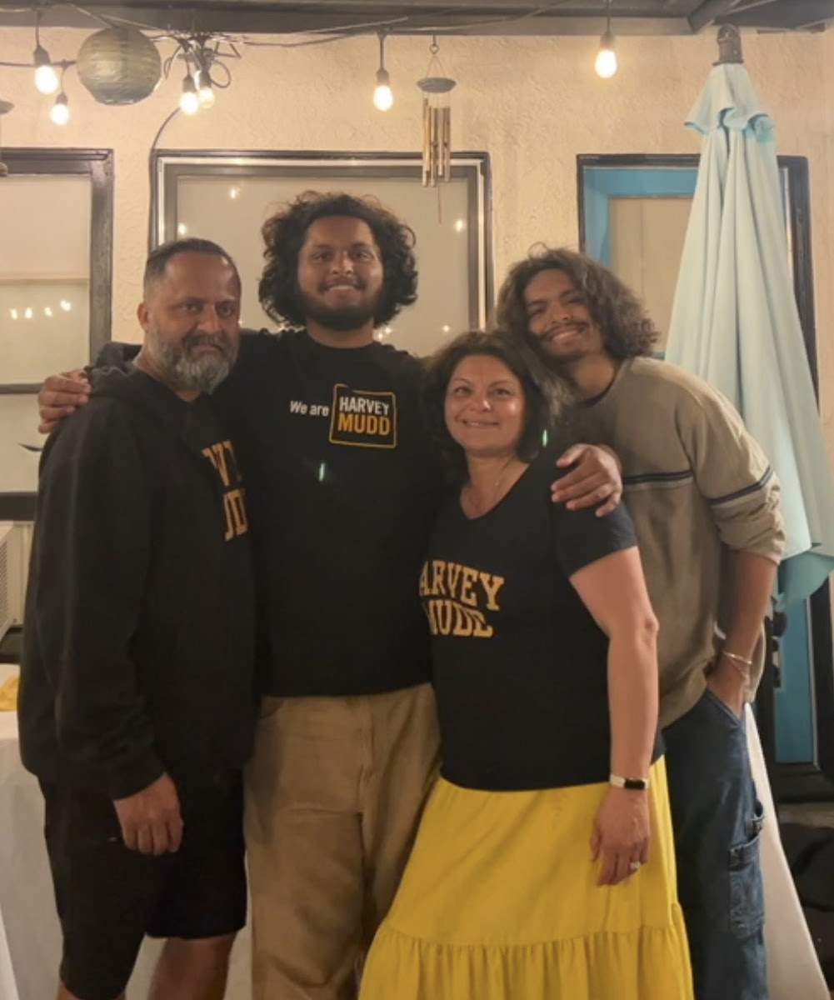
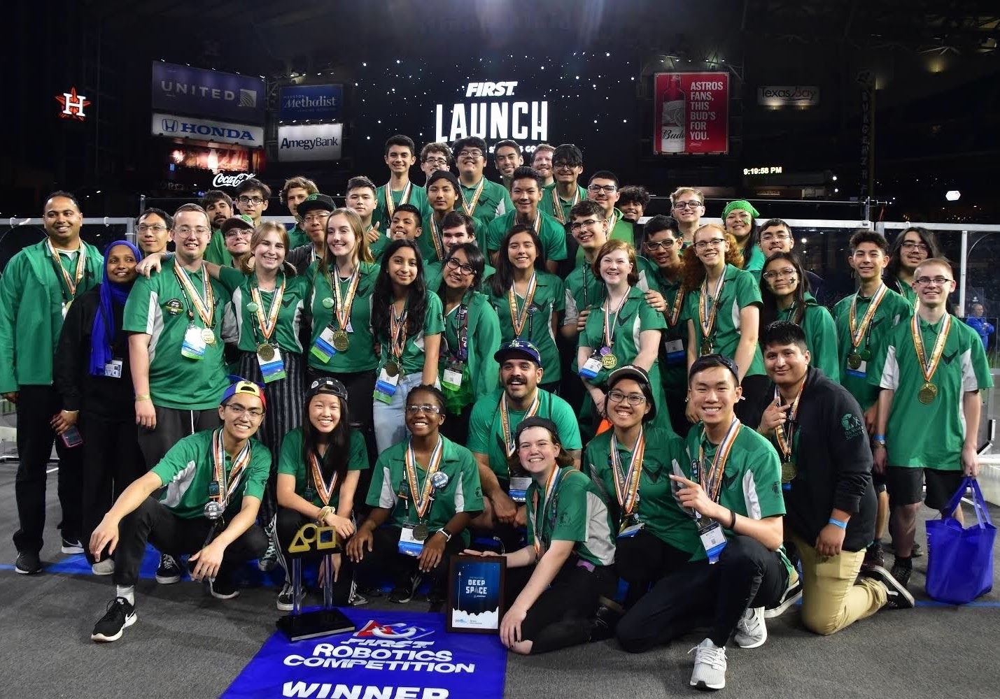

Background
I was born and raised in Los Angeles, and there I live with my parents, grandma, brother, and our two dogs. My dad is from the Fiji islands, and my mom is from El Salvador, and they both immigrated with their families when they were young. Since I was born I was exposed to the sciences, as my Godfather is a PhD in Physics and worked for government doing R&D, and my grandfather worked as a radio communications engineer for Los Angeles County. I always had a general interest in science, but my passion for engineering and aerospace began in middle school, taking Project Lead The Way classes and competing in the Herndon Science competition hosted by the Aerospace corporation. I carried this passion into high school by joining my high school’s FIRST robotics team. On the team I practiced mechanical design, manufacturing, assembly, wiring, project management, and public speaking. I worked as a virtual intern at Boeing and Northrop Grumman where I learned about how large corporations operate by working in a team to develop a solution to a real-world problem and attending webinars.
Through those experiences, I saw an extreme lack of diversity in the aerospace field. This inspired me to cofound my high school’s Society of Hispanic Professional Engineers (SHPE) chapter, planning and executing outreach events and teaching students about CAD and 3D printing.
As an undergraduate in Mechanical Engineering at Johns Hopkins, I pursued opportunities to expand my knowledge of mechanical engineering through on-campus work, clubs, and classes, and research! I have also explored the aerospace industry through internships. I also aim to create a safe space for minorities in engineering through my involvement with SHPE @ JHU and my work as a HULA peer mentor!
Now, as I graduate student I am working as an R&D Co-Op at Baltimore Aircoil company, where I am expanding my knowledge of fluids and thermal systems by leading projects from conceptualization, design, testing, analysis, and presentation.

